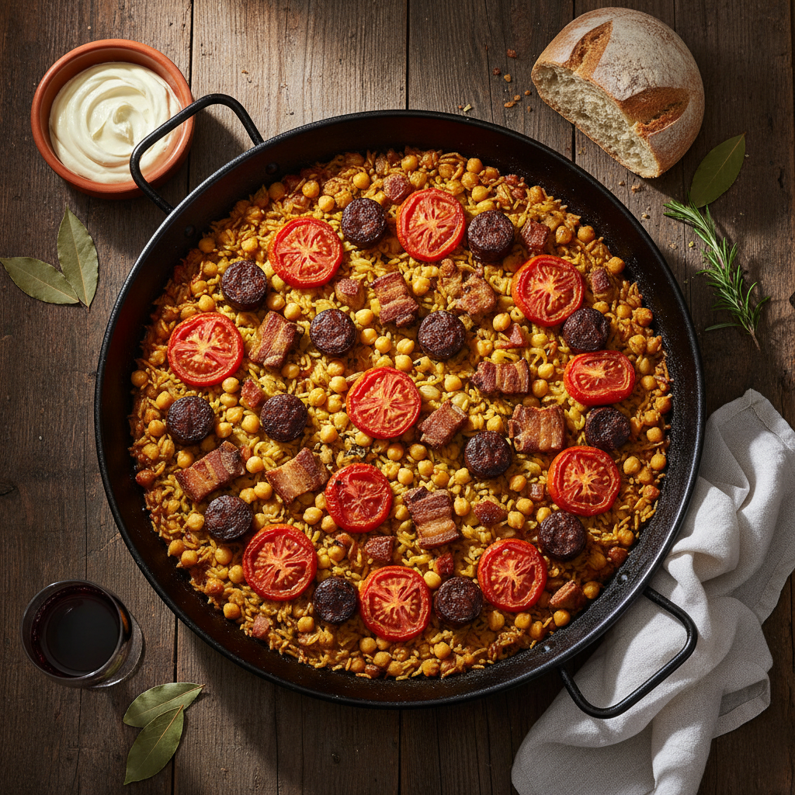
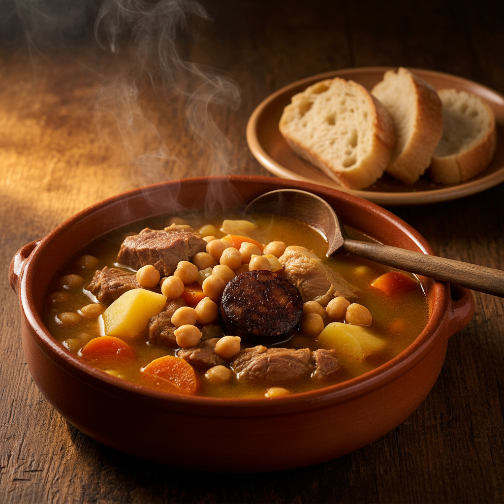
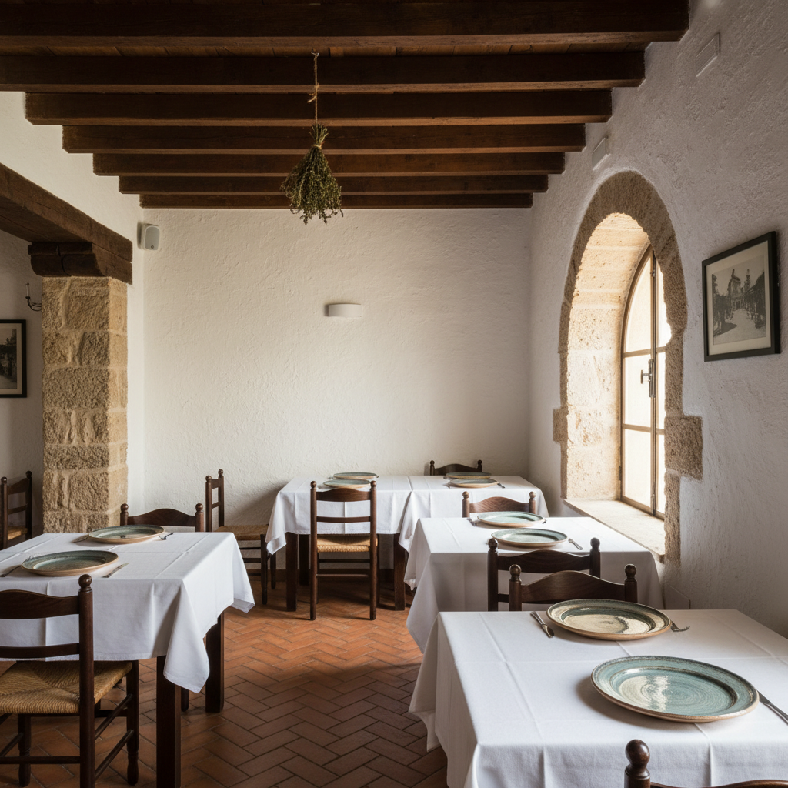

Una casa familiar en el corazón de la Marina Alta. Arroces por encargo, Puchero Pegolino los jueves, postres caseros y producto de la tierra tratado con honestidad. Cuarenta años cocinando lo mismo, cada vez mejor.

“Productos de cercanía elaborados con cariño y de manera honesta con la tierra.”
— Guía Repsol
Trabajamos sólo al mediodía y con producto del día. La carta cambia con la huerta y el mercado. Estos son los menús con los que abrimos cada semana en nuestra casa de la avenida de Fontilles.

Los juevesRecetas de aquí, sin reinterpretar. Arroces por encargo en pasos contados, guisos largos, postres que llevan tiempo. La cocina tiene el ritmo de Pego, no el del turismo.
Ca Rafel abrió en 1986 y desde entonces se sostiene en una idea simple: que la sala y la cocina hablen el mismo idioma. La cocina manda, la sala traduce, el comensal decide.
Por eso seguimos sólo al mediodía y por eso no abrimos los miércoles. Para cocinar lo que se sirve hace falta tiempo.
